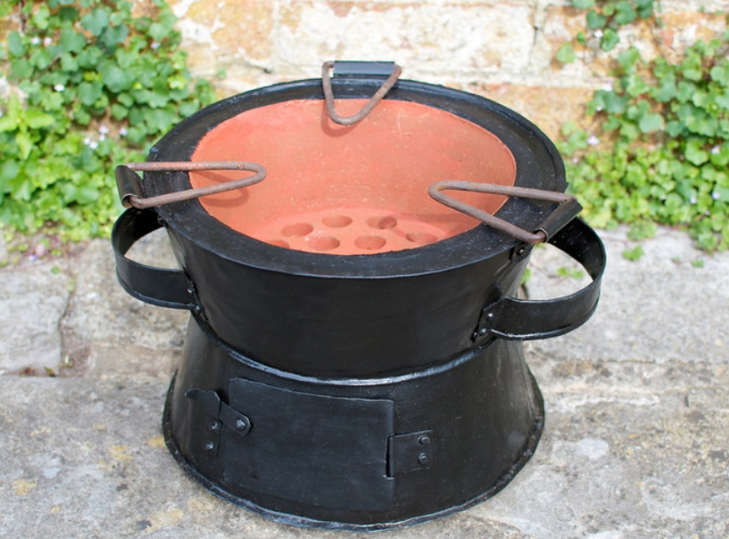
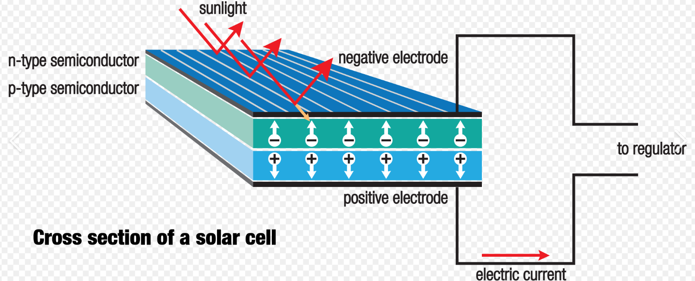

ResearchRecherche
How can sub Saharan Africa power its homes, businesses, and institutions sustainably and affordably?Comment l'Afrique subsaharienne peut elle alimenter ses foyers, ses entreprises et ses institutions de façon durable et abordable ?
Our group answers this question across three connected research axes, blending theoretical modeling, experimental measurement, and field deployment in Togo and across the region.
Notre groupe aborde cette question à travers trois axes de recherche complémentaires, en combinant modélisation théorique, mesures expérimentales et déploiements de terrain au Togo et dans la région.
Our ApproachNotre Approche
Modeling and SimulationModélisation et Simulation
Numerical models of solar resources, devices, and distribution networks ground every project in physical and statistical rigor.
Des modèles numériques de la ressource solaire, des composants et des réseaux de distribution donnent à chaque projet une base physique et statistique solide.
Experimental CharacterizationCaractérisation Expérimentale
On site measurements of modules, cookers, and grid behavior under real local conditions validate theory and surface unexpected effects.
Des mesures sur site de modules, foyers et comportement réseau en conditions réelles valident la théorie et révèlent les effets inattendus.
Field DeploymentDéploiement de Terrain
Working with public agencies, NGOs, and industry, results move from the lab into pilots, training, and policy advice.
En collaboration avec les institutions publiques, les ONG et le secteur privé, les résultats passent du laboratoire aux pilotes, à la formation et au conseil aux politiques.
Research AxesAxes de Recherche
Axis 01, Designing Smart Grids for African ContextsAxe 01, Conception de Réseaux Intelligents Adaptés au Contexte Africain
How do you design an electricity system that serves more people, more reliably, while staying resilient to climate stress? We model and simulate distribution networks, conduct on site measurements, and design integrated systems that bring together renewable generation, energy efficiency, and improved supply quality. The Togolese grid is our primary case, but the methods generalize across emerging market power systems.
Comment concevoir un système électrique qui dessert plus de personnes, de manière plus fiable, tout en restant résilient au stress climatique ? Nous modélisons et simulons les réseaux de distribution, menons des mesures sur site, et concevons des systèmes intégrés qui combinent production renouvelable, efficacité énergétique et amélioration de la qualité de l'approvisionnement. Le réseau togolais est notre cas d'étude principal, mais les méthodes se généralisent à d'autres systèmes électriques en marché émergent.
Axis 02, Optimizing Local Energy EquipmentAxe 02, Optimisation des Équipements Énergétiques Locaux

Cooking accounts for a large share of household energy use across West Africa, mostly in the form of charcoal and wood. This axis evaluates cooking technologies under real conditions, identifies the most efficient and lowest impact options, and informs the design of improved stoves that can scale through local manufacturing. The goal is straightforward, less biomass burned per meal cooked, with measurable health and climate benefits.
La cuisson représente une part importante de la consommation d'énergie domestique en Afrique de l'Ouest, principalement sous forme de charbon de bois et de bois. Cet axe évalue les technologies de cuisson en conditions réelles, identifie les options les plus efficaces et les moins impactantes, et oriente la conception de foyers améliorés susceptibles d'être produits localement. L'objectif est simple, moins de biomasse brûlée par repas préparé, avec des bénéfices mesurables pour la santé et le climat.
Axis 03, Photovoltaic Materials, Components, and SystemsAxe 03, Matériaux, Composants et Systèmes Photovoltaïques

Organic and emerging photovoltaic technologies often lose performance at the interfaces between active materials and electrodes. We investigate transparent conductive oxides and engineered interfaces to enhance charge transfer and durability. The same group also studies how mature silicon technologies behave under Sahelian and tropical conditions, where temperature, dust, and humidity can shift performance well outside lab specs.
Les technologies photovoltaïques organiques et émergentes perdent souvent en performance aux interfaces entre matériaux actifs et électrodes. Nous étudions les oxydes conducteurs transparents et les interfaces optimisées pour améliorer le transfert de charge et la durabilité. Le groupe étudie également le comportement des technologies silicium matures en conditions sahéliennes et tropicales, où la température, la poussière et l'humidité peuvent éloigner sensiblement les performances des spécifications de laboratoire.
Services to the CommunityServices à la Communauté
Beyond academic research, our work supports the broader renewable energy ecosystem in Togo and the region. The group characterizes solar modules, models and simulates module behavior, characterizes and models local energy networks, and tests cooking technologies. We collaborate with public institutions including the Ministry of Mines and Energy, the Directorate General for Energy, the Togolese Agency for Rural Electrification and Renewable Energies (AT2ER), and the Ministry of Environment and Forest Resources. We also support civil society organizations, NGOs, and companies, both in Togo and internationally, on technician training, dissemination of renewable energy techniques, equipment design and testing, and applied R&D in renewable energy technologies.
Au delà de la recherche académique, nos travaux soutiennent l'écosystème des énergies renouvelables au Togo et dans la région. Le groupe caractérise les modules solaires, modélise et simule leur comportement, caractérise et modélise les réseaux d'énergie locaux, et teste les technologies de cuisson. Nous collaborons avec des institutions publiques, notamment le Ministère des Mines et de l'Énergie, la Direction Générale des Énergies, l'Agence Togolaise d'Électrification Rurale et des Énergies Renouvelables (AT2ER), et le Ministère de l'Environnement et des Ressources Forestières. Nous accompagnons également les organisations de la société civile, les ONG et les entreprises, au Togo et à l'international, sur la formation de techniciens, la vulgarisation des techniques d'exploitation des énergies renouvelables, la conception et les tests d'équipements, et la recherche et le développement appliquée en énergies renouvelables.